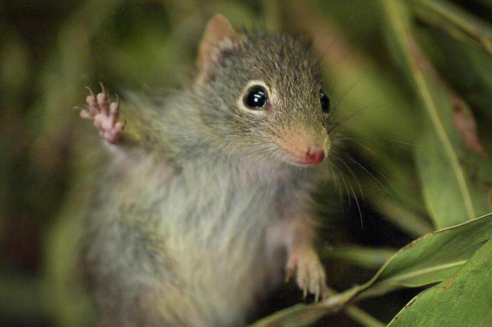

Gilbert's Potoroo Potorous gilbertii Gilbert's Potoroo is one of Australia's most endangered marsupials. These small, nocturnal animals are known for their soft, dense fur and their preference for dense, long-unburnt vegetation. They are critical for the ecosystem due to their role in spore dispersal of fungi.

Habitat
Gilbert's Potoroo is found in a few isolated locations in southwestern Australia, particularly in areas with dense understorey vegetation. Their habitat consists of long-unburnt shrublands and heathlands, where they can find food and shelter.
Diet
The diet of Gilbert's Potoroo is primarily composed of fungi, particularly underground truffles. They also consume seeds, berries, and small invertebrates. Their foraging behavior helps disperse fungal spores, which is essential for the health of their ecosystem.
Conservation Status
Gilbert's Potoroo is critically endangered, with a population of fewer than 100 individuals remaining in the wild. Major threats include habitat destruction, altered fire regimes, and predation by introduced species. Conservation efforts focus on habitat protection, captive breeding programs, and translocation to suitable habitats.
How to Help
You can help protect Gilbert's Potoroo by supporting conservation organizations, participating in habitat restoration projects, and raising awareness about their endangered status. Donations to wildlife conservation groups and volunteering your time to help with local conservation efforts are crucial for their survival.
"Saving Australia's Endangered, Together for a Wilder Future"